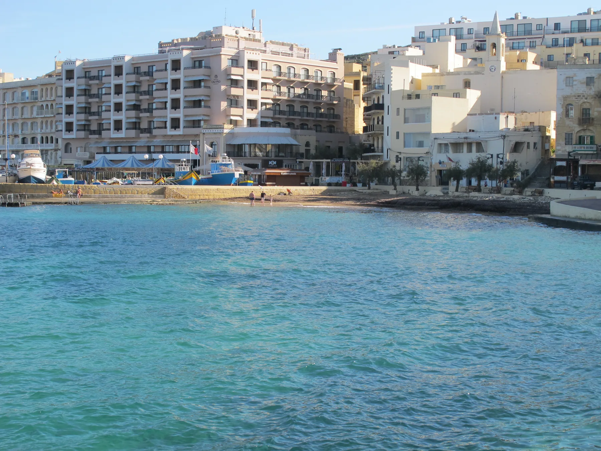

The official bathing-water profile identifies a small sand-and-pebble beach by the promenade. It does not prove a view, access route or swimming condition for a listing.

MARSALFORN · GOZOBay life.
Bay life.
Street by street.
A compact waterfront settlement with a seasonal pulse, everyday services and residential roads behind the bay. The exact address still decides outlook, gradient, access and noise.
A COASTAL SETTLEMENT
One bay, several contexts.
Marsalforn sits within the Żebbuġ, Gozo local-council area. The bay head, promenade, residential streets and outer coast are useful viewing contexts, but they are not interchangeable and they do not make every home seafront.
Summer and winter bring different activity. Ask how the exact street works on an ordinary weekday and during the busier season.
Qbajjar, Xwejni, Għar Qawqla, Żebbuġ village, Xagħra and Victoria retain their own place context.
Current conditions stay live.
The Environmental Health Directorate monitors points around Marsalforn Bay. Annual classifications and weekly results can change, so this guide links the official record instead of freezing a bathing claim.
Official bathing-water profile ↗Xwejni is a separate destination.
Visit Gozo places the salt pans west of Marsalforn beyond Qbajjar and asks visitors not to walk on them. That makes a responsible outing reference, not a centre amenity or an invented property route.
Visit Gozo salt-pans guidance ↗EVERYDAY CHECKS
Useful anchors, honest limits.
These current operator and public-service sources establish practical context. They do not rank providers, identify the nearest stop or store, or create a journey time from the locality centroid.
Route 310
Malta Public Transport currently lists the Victoria–Marsalforn corridor. Use the live page for stops, diversions and departures.
Route 310 live page ↗Route 322
The operator currently lists a Marsalforn–Mġarr/Vapur corridor. That is not a guaranteed ferry connection or fixed property travel time.
Route 322 live page ↗Ta’ Dirjanu
The operator identifies a Marsalforn foodstore. Check current location, hours, stock and access directly before relying on it.
Store locator ↗Victoria catchment
Primary HealthCare places Gozo and Comino within the Victoria Health Centre catchment. Live services and appointment rules stay on the official page.
Health centres ↗FOOD WITHOUT A RANKING
Two registered examples, no “best of” list.
The MTA register and current operator sites anchor these names. Neither example establishes quality, price, opening hours, a waterfront view or proximity to a particular home.
Il-Kartell
The MTA register lists licence RST-12823 in Marsalforn, and the restaurant maintains its own current site.
Il-Kartell operator page ↗Odyssey
The MTA register lists licence RST-12816 in Marsalforn, with current details left to the operator.
Odyssey operator page ↗No line across the bay.
This preview draws no council boundary, property pin, straight-line walk, water shortcut, bus schedule, car-traffic estimate or taxi price. Any future route needs real endpoints, routed geometry and a named mode and source.
Open the locality overview only when you need it.
The map frames Marsalforn and surrounding place labels for orientation. It deliberately draws no boundary, route, distance, travel time or listing location and loads from OpenStreetMap only after your click.
Environmental Health Directorate · Visit Gozo: Marsalforn · Visit Gozo: salt pans · Malta Public Transport 310 · Malta Public Transport 322 · Primary HealthCare · Ta’ Dirjanu · MTA restaurant register · Il-Kartell · Odyssey
Editorial preview only. No ranking, fixed opening hours, present-day bathing claim, property-specific distance, guaranteed view, parking claim, accessibility promise or locality-wide journey time is implied.